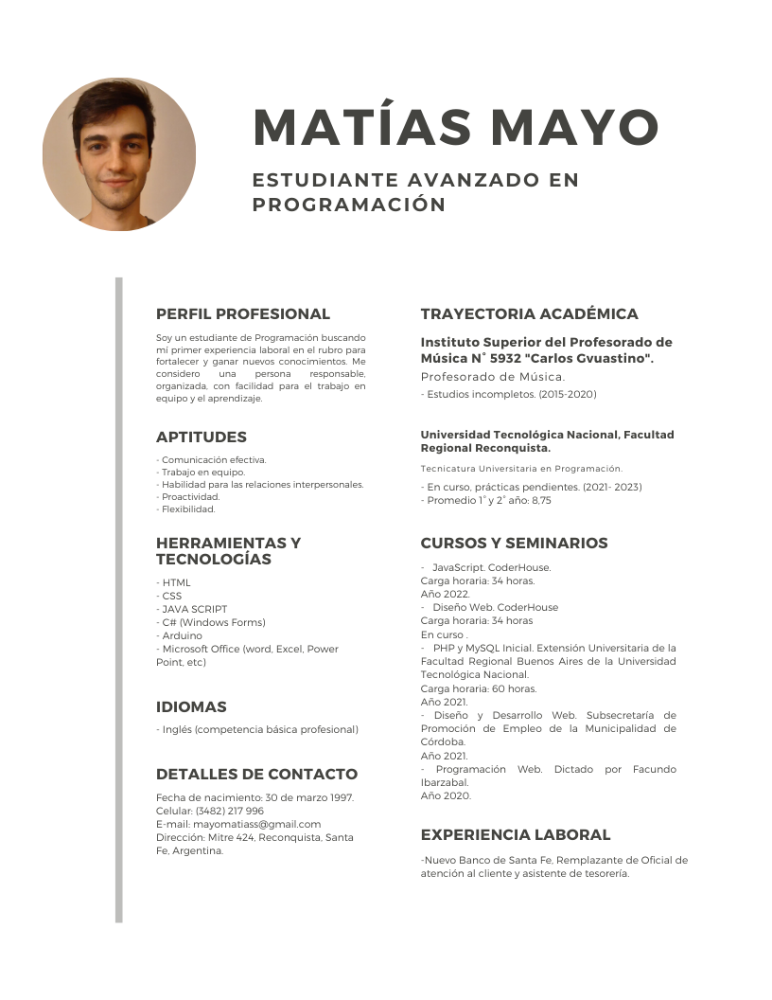

About Me

I am a talented, ambitious and hardworking individual, with broad skills and experience in software. Furthermore, I am adept at handling multiple tasks on a daily basis competently and at working well under pressure.
Recently, I completed an Associate degree , including DB and programming modules at the UTN(Universidad Tecnológica Nacional) and I am now ready to work as a Programmer in the software industry.
I have experience working as part of a team and individually. A key strength is communication; building strong relationships with people in order to deliver the best results.